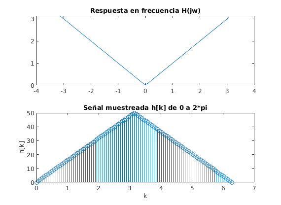
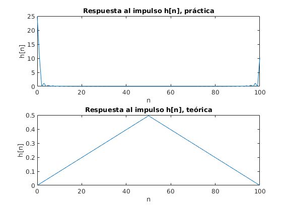
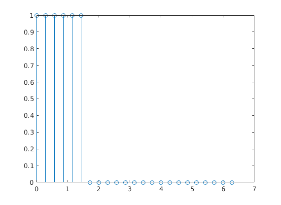
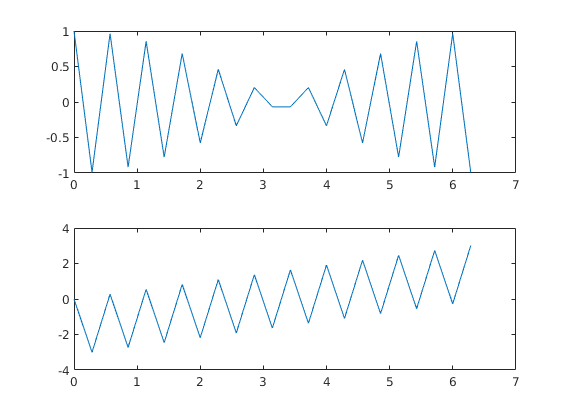
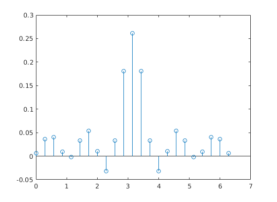
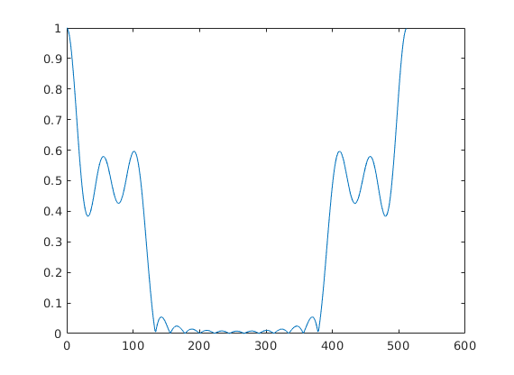
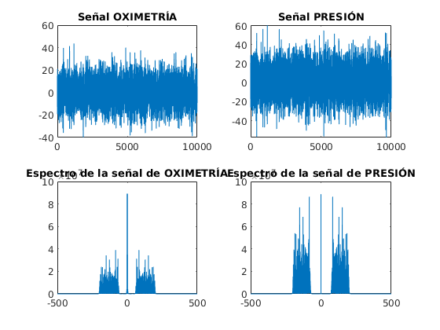
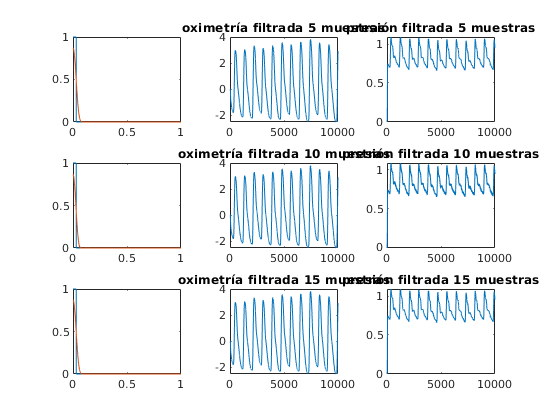

Práctica 7. Diseño de filtros FIR por muestreo en la frecuencia
Filtrado analógico y digital Juan José Guzmán Cruz
Contents
Resumen
Se diseñan filtros por el método de muestreo en frecuencia comparando la forma práctica y teórica de implementarlos. Se diseñan filtros por el mismo método para filtrar una señal de oximetría de pulso y de presión.
Objetivos
1. Utilizar el método de muestreo en la frecuencia para el diseño de filtros FIR. 2. Diseñar filtros digitales FIR para filtrar una señal de oximetría de pulso y presion.
Ejercicio 1.
Grafica la respuesta en frecuencia del filtro integrador para 101muestras y pendiente unitaria.
clc clear all w1 = -pi:.1:pi; h_jw = j*w1; N = 101; m = 1; for m = 1:N if m < 51 y(m) = (m-1); else y(m) = (N-1)-(m-1); end end w = linspace(0,2*pi,N); figure (1) subplot 211, plot(w1,abs(h_jw)) title('Respuesta en frecuencia H(jw)'); subplot 212, stem(w,abs(y)), xlabel('k'), ylabel('h[k]') title('Señal muestreada h[k] de 0 a 2*pi');
Ejercicio 2.
Ahora grafica h[n] a partir de los resultados teóricos y de manera práctica, mediante la transformada inversa de Fourier. Compara los resultados obtenidos.
n=0;
for k = 1:N
if k < 51
h(k) = 1/N*(k-1)*exp(j*2*pi*(k-1)*(n-1)/N);
n=n+1;
else
h(k) = 1/N*((N-1)-(k-1))*exp(j*2*pi*(k-1)*(n-1)/N);
n=n+1;
end
end
n = 0:N-1;
% h[n] practica
y_transf = ifft(y);
figure (2)
subplot 211, plot(n,abs(y_transf)), xlabel('n'), ylabel('h[n]')
title('Respuesta al impulso h[n], práctica');
subplot 212, plot(n,abs(h)), xlabel('n'), ylabel('h[n]')
title('Respuesta al impulso h[n], teórica');
 Ejercicio 3.
Diseña un filtro pasa-bajas de fase lineal FIR, con 23 muestras, la respuesta ideal esta dada como un filtro pasa-banda con w0 = 0.3*pi. Asume una frecuencia de muestreo normalizada de acuerdo con la frecuencia de Nyquist w = pi.
clc clear all w0 = .3*pi; N = 23; m = N*w0/(2*pi); for n = 1:N if n < 2*m h(n) = 1; else h(n) = 0; end n = n + 1; end n = linspace(0,2*pi,N); figure (3) stem(n,h);
Ejercicio 4.
Grafica la magnitud y fase de la respuesta en frecuencia ideal, crea el vector de la respuesta de fase lineal, recuerda que j=sqrt(-1).
w = 0.3*pi; N = 23; M = (N-1)/2; k=0:N-1; w=1:N; H(w) = exp(-j*2*pi*M*k/N); w = linspace(0,2*pi,N); figure (4) subplot 211, plot(w,real(H)) subplot 212, plot(w,angle(H))
Ejercicio 5.
Crea el vector de la respuesta en frecuencia H considerando magnitud y fase. Posteriormente diseña el filtro utilizando la transformada inversa de Fourier. Obtén la parte real de h[n] y graficala utilizando la función stem.
y = ifft(H.*h); figure(5) stem(w,real(y))
Ejercicio 6.
Prueba el filtro diseñado, obtén la magnitud de la respuesta en frecuencia utilizando 512 muestras.
N = 512; y1 = fft((real(y)),N); n = 0:N-1; figure(6) plot(n,abs(y1))
Ejercicio 7.
Ahora diseña un Filtro FIR por el método de muestreo en la frecuencia, para las señales de oximétria de pulso y presión, utiliza 5, 10 y 15 muestras en la frecuencia para el diseño de cada filtro. Posteriormente grafica la respuesta en frecuencia de cada filtro diseñado así como su respuesta en frecuencia ideal.
load('datos') y=[1:10000]; FM = 1000; NF = length(oximetria); oxi = fftshift(abs(fft(oximetria, NF)).^2); frec_oxi=(FM/NF)*(-NF/2:NF/2-1); NF2=length(pulso); F_pulso=fftshift(abs(fft(pulso, NF2)).^2); frec_pulso=(FM/NF2)*(-NF2/2:NF2/2-1); figure(7) subplot 221, plot(y,oximetria),title('Señal OXIMETRÍA') subplot 222, plot(y,pulso),title('Señal PRESIÓN') subplot 223, plot(frec_oxi,oxi), title('Espectro de la señal de OXIMETRÍA') subplot 224, plot(frec_pulso,F_pulso), title('Espectro de la señal de PRESIÓN') % Para 5 muestras N = 90; f = [0 0.03 0.03 0.06 1]; m = [1 1 0 0 0]; b = fir2(N,f,m); [h,w] = freqz(b,1,500); y1=filter(b,1,oximetria); y2=filter(b,1,pulso); % Para 10 muestras f2 = [0 0.015 0.0225 0.03 0.03 0.037 0.8 0.85 0.9 1]; m2 = [1 1 1 1 0 0 0 0 0 0]; b2 = fir2(N,f2,m2); [h2,w2] = freqz(b2,1,500); y3 = filter(b2,1,oximetria); y4 = filter(b2,1,pulso); % Para 15 muestras f3 = [0 0.015 0.0225 0.03 0.03 0.1 0.2 0.3 0.4 0.5 0.6 0.7 0.8 0.9 1]; m3 = [1 1 1 1 0 0 0 0 0 0 0 0 0 0 0]; b3 = fir2(N,f3,m3); [h3,w3] = freqz(b3,1,500); y5 = filter(b3,1,oximetria); y6 = filter(b3,1,pulso); figure(8) subplot 331, plot(f,m,w/pi,abs(h)) subplot 332, plot(y1), title('oximetría filtrada 5 muestras') subplot 333, plot(y2), title('presión filtrada 5 muestras') subplot 334, plot(f2,m2,w2/pi,abs(h2)) subplot 335, plot(y3), title('oximetría filtrada 10 muestras') subplot 336, plot(y4), title('presión filtrada 10 muestras') subplot 337, plot(f3,m3,w3/pi,abs(h3)); subplot 338, plot(y,y5), title('oximetría filtrada 15 muestras') subplot 339, plot(y,y6), title('presión filtrada 15 muestras') 
Discusión
% Figura 1. Se observa la respuesta en frecuencia H(jw) del filtro % integrador de -pi a pi y el muestreo de dicha señal h[k] de 0 a 2*pi. % Figura 2. Respuesta al impulso de forma teórica resolviendo la sumatoria % para obtener h[n] y práctica utilizando el comando ifft. % Figura 3. Filtro pasa-bajas ideal con 23 muestras y fase lineal. % Figura 4. Magnitud y fase del filtro pasa-bajas ideal de 0 a 2*pi. % Figura 5. Respuesta al impulso de la respuesta en frecuencia utilizando % la transformada inversa de Fourier. % Figura 6. Magnitud de la respuesta en frecuencia del filtro pasa-bajas % utilizando 512 muestras % Figura 7. (sup izq) señal de oximetría, (sup der) señal de presión, % (inf izq) espectro de la señal de oximetría, (inf der) espectro de la % señal de presión. % Figura 8. Señales de oximetría y presión filtradas con distintos valores % de muestras.
Conclusiones
% En la figura 2 se ve claramente que los gráficos son diferentes y % deberian ser iguales o muy parecidos, por lo tanto esta parte no la % considero correcta.